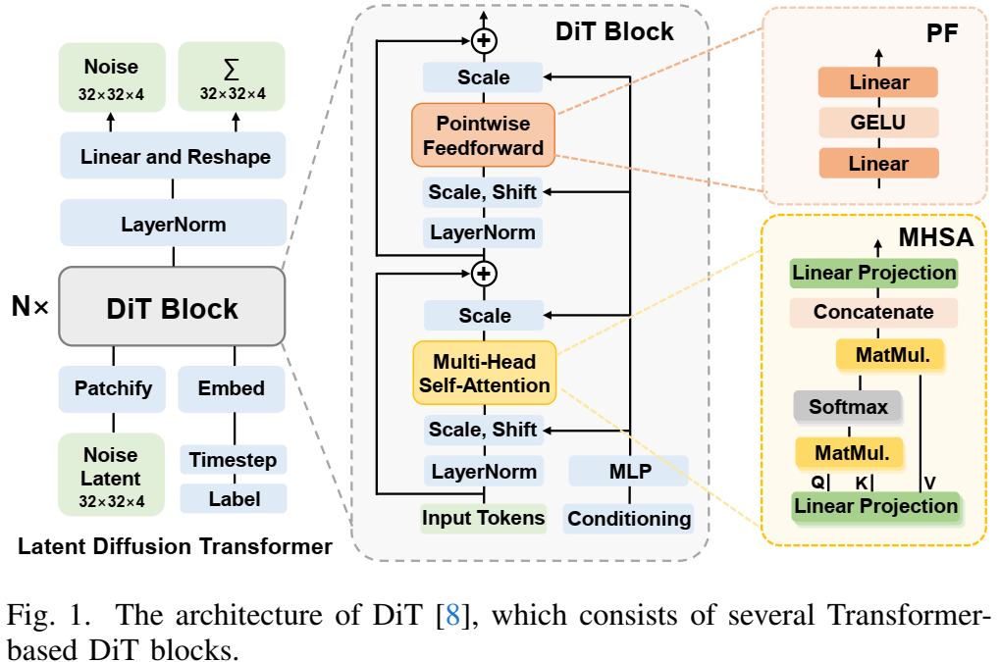
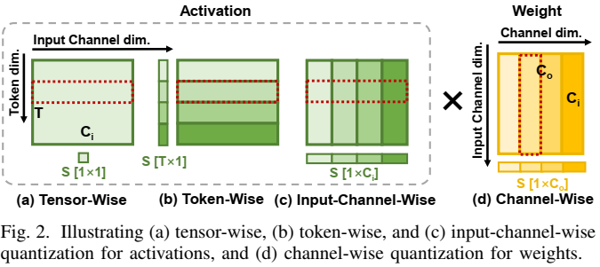
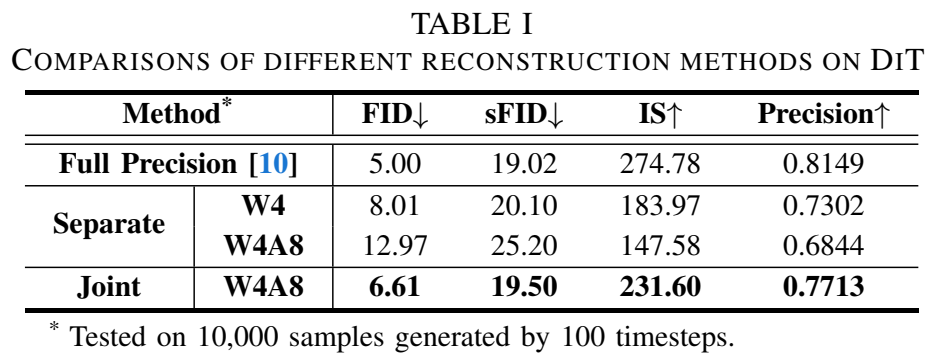
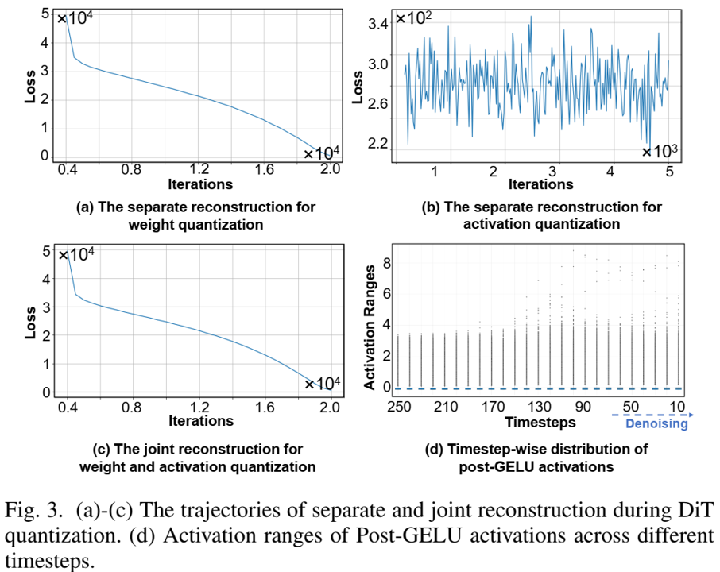
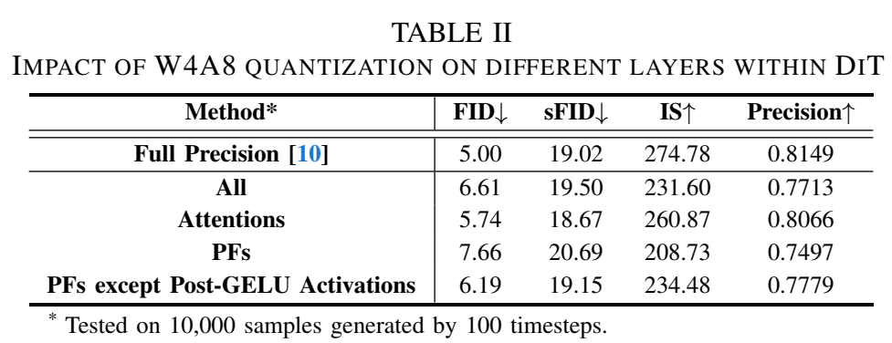

论文阅读三十八：TaQ-DiT：用于扩散Transformer的时间感知量化
摘要
基于Transformer的扩散模型，称为扩散Transformers（DiTs），已经在图像和视频生成任务中取得先进性能。然而，它们的大型模型尺寸和缓慢推理速度限制它们的实际应用，呼唤模型压缩方法，如量化。不幸地是，现有DiT量化方法忽略了（1）重建的影响和（2）跨不同层的不同的量化敏感度，阻碍它们的性能。为了解决这些问题，我们提出创新的用于DiTs的时间感知量化（TaQ-DiT）。具体地，（1）当在量化阶段分别重建权重和激活，我们观察到不收敛问题，并引入联合重建方法来解决这个问题。（2）我们发现Post-GELU激活对量化尤其敏感，因为它们在不同的去噪步骤中具有显著的可变性，并且在每个步骤中都存在极端的不对称性和变化。为此，我们提出时变感知变换来促进更有效的量化。实现结果表明，当量化DiT的权重到4位和激活到8位（W4A8）时，我们的方法显著超越先前量化方法。
引言
由于分层架构的高效性，基于 UNet 的扩散模型（DM）[1] 在视觉生成任务中取得了显著的性能[2]-[4]。最近，受Transformers成功的启发[5]–[7]，基于Transformer的DM被称为扩散Transformers（DiTs）[8]，并在更复杂的生成任务上表现出巨大的可扩展性。特别是，最先进的（SOTA）生成框架Sora[9]是建立在DiTs之上的，突显了它们的巨大潜力和有效性。然而，它们的大模型尺寸和迭代去噪过程中涉及的密集计算导致推理速度缓慢[10]，需要有效的模型压缩方法。
量化[11]将全精度（FP）参数转换为整数，是最有效的模型压缩技术之一。特别是，训练后量化（PTQ）受到了广泛关注，因为它只需要小型校准数据集，消除了昂贵的权重微调过程[12]-[14]。然而，现有的量化方法主要是为基于U-Net的DM设计的[15]-[17]，由于其独特的算法特性和架构，直接应用于DiTs时会导致性能下降[18]。这突显了对针对DiT量身定制的专门量化算法的需求。例如，PTQ4DiT[10]识别出DiT中存在显著通道，这些通道在时间步长上表现出极端的幅度和可变性，并提出了促进量化的专用技术。此外，Q-DiT[18]观察到DiT中权重和激活的显著差异，并引入了细粒度量化和自动粒度搜索策略来提高性能。尽管这些方法很有效，但它们忽略了（1）重建对DiT量化的影响，以及（2）DiT内不同层的不同量化灵敏度。
为了推进DiT量化的前沿，我们提出了TaQDiT，并做出了以下贡献：
- 我们观察到，广泛采用的量化重建方法，即分别优化权重和激活的量化，存在非收敛问题。为了解决这个问题，我们建议使用一种联合重建方法，该方法集成了权重和激活的重建，以提高它们的兼容性并提高量化性能。
- 我们进一步发现，DiT内GELU（后GELU激活）后的激活对量化特别敏感，因为它们（1）在不同去噪步骤之间存在显著差异，（2）在每个步骤中沿输入通道维度存在极端不对称和变化。为了解决这些问题，我们提出了具有时间差异感知的变换，整合了创新的基于动量的偏移和重建驱动的迁移技术，以促进后GELU激活的量化，提高性能。
- 大量实验证明了TaQ-DiT的有效性。具体来说，当权重量化为4位，激活为8位（W4A8）时，TaQ-DiT的性能优于SOTA-DiT专用量化方法0.37-1.72 FID（越低越好）。
预备知识
DiT架构

如图1所示，DiT由N个基于Transformer的DiT块组成。每个块由两个关键组件组成：多头自注意（MHA）和逐点前馈（PF），在去噪过程中都受到类条件和时间步长信息的影响。具体来说，MHA主要由查询/键/值之间的线性投影层和矩阵乘法（Matmuls）组成，而每个PF由两个线性层组成，中间有一个GELU激活函数。因此，考虑Transformer块的时变特性和架构特性对于设计有效的DiT量化方案至关重要。
均匀量化
均匀量化是最常见且易于实现的模型压缩方法，它通过以下方式将浮点参数X转换为b位整数Q（X）：
其中S和Z分别表示缩放因子和零点，具体如下：
均匀量化可以在不同的粒度级别上应用。具体而言，如图2（a）所示，激活通常采用张量量化[19]，其中将单个缩放因子应用于所有元素以简化实现。由于每个激活标记内的元素需要与相应权重通道中的元素相乘并求和，因此标记量化也可用于更精细的粒度[12]。如图2（b）所示，它为单个激活标记分配了不同的缩放因子，从而在不牺牲硬件效率的情况下提高了量化性能。同样，如图2（d）所示，权重通常使用逐信道量化[20]，其中每个信道都被分配了一个单独的缩放因子，旨在提高量化性能，同时保持硬件效率。

方法
DiT量化的联合重建
观察：激活量化重建中的非收敛问题。为了探索DiT量化的挑战和机遇，我们首先应用现有的DM量化方法[11]，[17]，这些方法遵循[21]分别重建了权重和激活的缩放因子。然而，如表I所示，我们观察到仅将权重量化到4位（W4）会导致↑3.01 Frechet Inception距离（FID），而进一步将激活量化到8位（W4A8）会导致显著的↑7.97 FID。这表明这种广泛采用的重建方法不适合DiT量化，特别是对于激活。我们将这种失败归因于重建过程中的非收敛问题。如图3（a）和3（b）所示，尽管权重的量化重建收敛，但激活的重建表现出振荡，从而限制了DiT量化中可实现的性能。


方法：激活和重量的联合重建。为了解决这个问题并提高量化性能，在QDrop[22]的推动下，我们整合了权重和激活的重建，以促进它们的兼容性：
\underbset{min}_{S_W,S_A} \;\mathcal{L}[B(Q(W),Q(A)) - B(W,A)], \tag{3}
其中B表示要重建的块或层，Q（·）表示量化函数。W和A分别表示权重和激活，SW和SA作为其相应的缩放因子。如图3（c）和表1所示，与单独重建方法相比，联合重建解决了非收敛问题，并在W4A8上将量化性能提高了↓6.36 FID。
GELU后激活的转移和迁移
如表1所示，尽管联合重建有效，但W4A8量化模型和全精度对应模型之间仍存在不可忽视的性能差距（↑1.61 FID）。为了探究其原因，我们进一步对不同层的量子化进行了消融研究。如表II所示，PF层比注意块对量化更敏感，导致性能比量化整个模型更差（↑2.66 FID）。更进一步，我们发现GELU（GELU后激活）后的激活是导致PF性能下降↑1.47 FID的主要因素。

为了解决这个问题，我们首先对GELU后的激活进行可视化和分析，然后介绍我们基于动量的转移（方法1）和重建驱动迁移（方法2）以促进量化。
观察结果1：不同去噪步骤之间存在显著差异。如图3（d）所示，在去噪过程中，GELU后激活在不同时间步长上表现出显著的可变性，对量化提出了挑战。为了适应时间步长依赖性，可以考虑两种主要的量化方法。第一种是动态量化[12]、[18]、[23]，它在推理过程中为每个时间步计算唯一的缩放因子，提高了性能，但增加了延迟。第二种是静态量化[10]，[23]，它依赖于所有时间步长的聚合统计数据，在校准过程中预先计算一个缩放因子，提高了量化效率，但往往会导致性能下降。